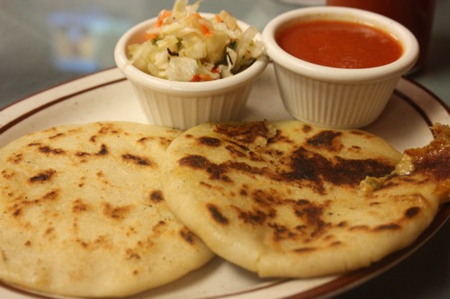

¡Ricas Pupusas!

Ingredientes:
Pupusas
- 100grs de Harina de Maíz
- 2 Cucharadas de Frijoles Molidos refritos Previamente Preparados.
- 4 tazas de quesillo
- 80grs de chicharon molido, previmente cocido.
Curtido
- 100 grs de repollo picado
- 1-1/2 de Vinagre
- 1- Zanahoria Cortada entrosos.
- 1 rollo de cilantro Picado
- 2 - cucharaditas de hierva buena.
- 1/2- de jugo de Limón.
Salsa:
- 5 tomates
- 1/2- Chile Verde
- 1/2- Zanahoria Cortada entrosos.
- 1/2 Cucharadita de Salsa Inglesa
- 1/2Cucharadita de Mostaza.
- 1 sanonador de costilla
- 2 chiles Jalapeños
- 1-cucharada de oregano
- 6-tazas de agua
Procedimiento Para la salsa:
Todos los ingredientes se pasan por la licuadora hasta que quede una consistencia de puré; que queda fino o grueso según el gusto de cada quien.
A continuación se pone a cocer, dejandolo hervir por lo menos una media hora, hasta que tomate esté bien cocido.
El punto lo dirá su paladar.
Procedimiento Para El Curtido:
En un recipiente limpio agregue el repollo,zanahoria,
cilantro y llerva buena,
mezclelos con una chuchara
asta estar bien rebuelto luego agregue el vinagre y el limon
dejarlo en reposo durante unos 30 minutos.
Procedimiento Para las Pupusas
En un recipiente hondo mezcle la hariza de maíz,
hasta lograr una masa homogenea
deje reposar por uno 15 minutos.
despues proceda a realizar bolitas de masa,
rellenas con cantidades
pequeñas de frijoles,queso y chicharon.
palmee las bolitas con las manos asta logras
una consistencia plana como tortilla.
Coloquelas en una plancha previamente caliente,
con aceite vegetal, y de vuelta ambos lados
de la tortilla hasta que esta este perfectamente
cocida, sirvalas poniendo el curtido sobre
la tortilla y la salsa aun lado...
Tiempo de preparación: 150 minutos.
Nivel de Dificultad: Medio